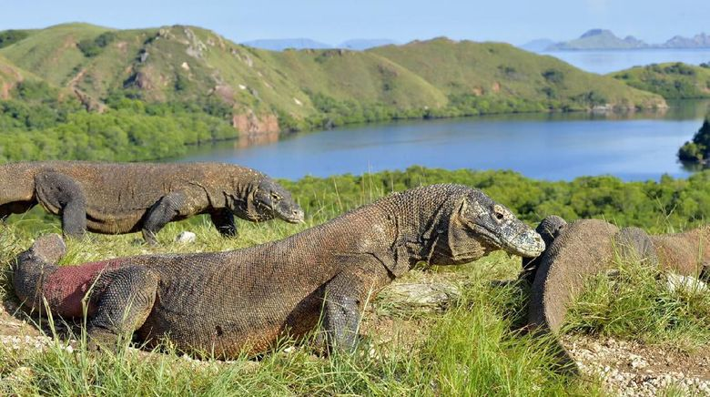

|  | Pulau Komodo adalah pulau utama di mana satwa Komodo - kadal terbesar di dunia - hidup. Biasanya, kamu akan turun di sini untuk melihat langsung Komodo di habitat aslinya - tentu saja ditemani seorang ranger yang akan memandumu sepanjang perjalanan. Para pengunjung di sana bisa melakukan treking pendek untuk mengunjungi habitat asli Komodo. Menariknya, habitat Komodo juga bisa ditemukan di pulau lain. Pulau Rinca menjadi salah satu tempat untuk melihat habitat Komodo. Pulau yang dekat dengan Labuan Bajo ini menjadi destinasi favorit wisatawan. Khususnya bagi mereka yang ingin melihat Komodo dari dekat. Selain itu, Komodo juga bisa ditemukan di Pulau Padar, Pulau Gili Motang, Nusa Kode, dan Pulau Ontoloe. Selain pulau Komodo, disamping nya juga terdapat beberapa wisata lainnya seperti Laut, Bukit, dan Pantai Menawan. Untuk menyaksikan Pulau Komodo dari atas, kamu bisa mendaki Bukit Ara untuk menyaksikan keindahan dari Pulau Komodo ini. |